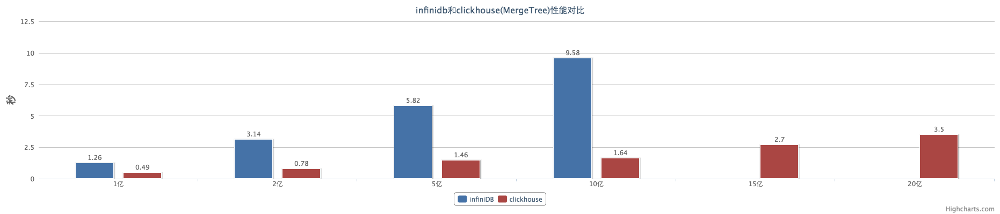
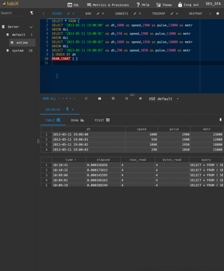

History
Yandex.Metrica is a web analytics service.
First in Russia, second in the world.

Daily ~25 billion events arrive.
Need to show reports in real-time.
Alexey, ClickHouse developer.
Since 2008, I worked on the data processing engine for Yandex.Metrica.
Yandex.Metrica is a web analytics service.
First in Russia, second in the world.
Daily ~25 billion events arrive.
Need to show reports in real-time.
Everything worked great. Users could get approximately 50 different reports.
But there's a problem. We want more. We want each report to be infinitely customizable.
Quickly made a prototype and based on it implemented "Report Constructor".
This is 2010.
It became clear where to move next.
We need a good column-oriented DBMS.
This is how row-oriented systems work:

This is how column-oriented systems work:

Nothing ready suited us.
So we made ClickHouse.
«Evolution of Data Structures in Yandex.Metrica»

* If you want to try ClickHouse, one server is enough.
We managed to make the system relatively convenient.
From the very beginning we had detailed documentation.
Over a couple of years, ClickHouse spread to other Yandex departments.
Mail, Market, Direct, Webmaster, AdFox, Infrastructure, Business Analytics...
There are cases when analysts independently installed ClickHouse on virtual machines and successfully used it without any questions.
Then we decided — ClickHouse is too good a system for us alone to use.
To make it more fun, let's get people outside hooked on ClickHouse, let them enjoy it. We decided to make it open-source.
Apache 2.0 license — minimum restrictions.
Goal — maximum product distribution.
We want Yandex product to be used worldwide.
See "Yandex Opens ClickHouse"
Well-structured, cleaned, immutable events.
Click stream. Web analytics. Ad networks. RTB. E-commerce.
Online game analytics. Sensor and monitoring data. Telecom data.
Financial transactions. Stock market analytics.
OLTP
ClickHouse has no UPDATE and full transactions.
Key-Value
If you need frequent queries to update by key, use another solution.
Blob-store, document oriented
ClickHouse is designed for large amounts of fine-grained data.
Hundreds of companies in Russia and nearby
Yandex, Mail.ru, Rambler, SKB Kontur…
Dozens of companies in Europe, USA, China
Cloudflare, Wikimedia, Lifestreet…
Search engine and analytics for Bitcoin transactions:
https://blockchair.com/
"Quite large tables are running, using only one server and everything works very fast — with any filters and sorting, almost instantaneous."
Bioinformatics - evolutionary genetics:
https://github.com/msestak/FindOrigin
"We are exploring evolution of novel genes in genomes because it seems that genomes are far from being static as previously believed and what actually happens is that new genes are constantly being added and old genes are lost."
LHCb experiment at CERN:
https://www.yandex.com/company/press_center/press_releases/2012/2012-04-10/
— out of desperation.
Yandex.Metrica must work.
To quickly process an analytical query, the system must:
1. Read fast.
2. Compute fast.
1. Read fast.
– locality by primary key;
– columns - read only what's needed;
– strict typing;
– data compression.
2. Compute fast.
– vectorized engine;
– specialization of data structures;
– low-level optimizations.
Algorithmic optimization.
MergeTree, data locality on disk
— fast range queries.
Example: uniqCombined function consists of a combination of three different data structures, suitable for different cardinality ranges.
Low-level optimization.
Example: vectorized query execution.
Specialization and attention to detail.
Example: we have 17 different algorithms for GROUP BY. The best one is chosen for your query.
https://www.percona.com/blog/2017/02/13/clickhouse-new-opensource-columnar-database/

Itai Shirav:
«I haven't made a rigorous comparison, but I did convert a time-series table with 9 million rows from Postgres to ClickHouse.
Under ClickHouse queries run about 100 times faster, and the table takes 20 times less disk space. Which is pretty amazing if you ask me».
Bao Dang:
«Obviously, ClickHouse outperformed PostgreSQL at any metric».
Timur Shenkao:
«ClickHouse is extremely fast at simple SELECTs without joins, much faster than Vertica».
Ömer Osman Koçak:
«When we evaluated ClickHouse the results were great compared to Prestodb. Even though the columnar storage optimizations for ORC and Clickhouse is quite similar, Clickhouse uses CPU and Memory resources more efficiently (Presto also uses vectorized execution but cannot take advantage of hardware level optimizations such as SIMD instruction sets because it's written in Java so that's fair) so we also wanted to add support for Clickhouse for our open-source analytics platform Rakam (https://github.com/rakam-io/rakam)»
«ClickHouse shows comparable speed on such query for 30 days and 8 times faster (!) on such query. We plan to test other queries as well, haven't gotten to it yet.
Query execution speed is stable. In Google BigQuery during peak loads, for example at 4:00 p.m. PDT or at the beginning of the month, query execution time can noticeably increase».
«This year we deployed a setup based on Druid — Imply Analytics Platform, as well as Tranquility, and were ready to launch to production… But after ClickHouse came out we immediately abandoned Druid, even though we spent two months studying and implementing it».
«结论：clickhouse速度更快！»
«In conclusion, ClickHouse is faster!»
http://verynull.com/2016/08/22/infinidb与clickhouse对比/

HTTP REST
clickhouse-client
JDBC (production), ODBC (beta)
Python, PHP (incl. Doctrine, Yii2), Perl, Go,
Node.js, Ruby, C++, .NET, Scala, R, Julia, Rust
Tabix (tabix.io) — developed specifically for ClickHouse.
As well as:
Grafana, Redash, Apache Zeppelin,
Superset, Power BI…
Website: https://clickhouse.com/
Google groups: https://groups.google.com/forum/#!forum/clickhouse
Mailing list: clickhouse-feedback@yandex-team.com
Telegram chat: https://telegram.me/clickhouse_en and https://telegram.me/clickhouse_ru (already 680 members)
GitHub: https://github.com/ClickHouse/ClickHouse/
+ meetups. Moscow, St. Petersburg, Novosibirsk,
Yekaterinburg, San Francisco... Next: Kyiv, Minsk...